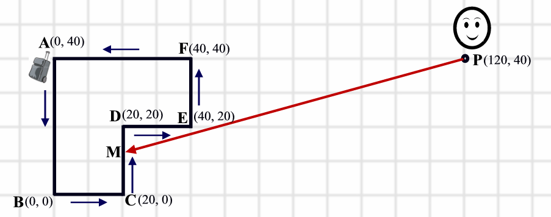

2007 ICPC World Finals · Problem E
Collecting your luggage after a flight can be far from trivial. Suitcases and bags appear on a conveyor belt, and hundreds of passengers fight for a good vantage point from which to find and retrieve their belongings. Recently, the Narita Airport Authority has decided to make this process more efficient. Before redesigning their baggage claim areas, they need a simulation program to determine how average passengers behave when collecting their luggage. This simulation assumes that passengers will always take a path of straight line segments to reach their luggage in the least amount of time.
For this problem, a conveyor belt is modeled as a simple polygon. A luggage piece appears on some point of the conveyor belt, and then moves along the conveyor belt at a constant speed. A passenger is initially positioned at some point outside the conveyor belt polygon. As soon as the piece of luggage appears, the passenger moves at a constant speed (which is greater than the speed of the luggage piece) in order to pick up the luggage. The passenger’s path, which may not cross over the conveyer belt but may touch it, puts the passenger in the same position as the moving piece of luggage in the least amount of time.
In the following figure, the conveyor belt is depicted as a polygon ABCDEF. The luggage starts at the top-left corner (Point A) and moves in counterclockwise direction around the polygon as shown with the small arrows. The passenger begins at point P and moves on the path that puts him and the luggage into the same place (point M in the figure) in the shortest amount of time. The passenger’s path is shown by a red arrow. This figure corresponds to the first sample input.

The input consists of one or more test cases describing luggage pickup scenarios. A scenario description begins with a line containing a single integer N (3 ≤ N ≤ 100), the number of vertices of the conveyor belt polygon. This is followed by N lines, each containing a pair of integers xi, yi (|xi|, |yi| ≤ 10000) giving the coordinates of the vertices of the polygon in counterclockwise order. The polygon is simple, that is, it will not intersect itself and it will not touch itself. The polygon description is followed by a line containing two integers px, py (|px|, |py| ≤ 10000), the coordinates of the starting position of the passenger. The last line of the description contains two positive integers VL and VP (0 < VL < VP ≤ 10000), which are the speed of the luggage and the passenger respectively. All the coordinates are given in meters, and the speeds are given in meters per minute.
You can assume that the passenger is positioned outside the conveyor belt polygon. The luggage will move in counterclockwise direction around the conveyor belt, starting at the first vertex of the polygon.
There is a blank line after each test case in the input file.
For each test case, print a line containing the test case number (beginning with 1) followed by the minimum time that it takes the passenger to reach the luggage. Use the formatting shown in the sample output (with minutes and seconds separated by a colon), rounded to the nearest second. The value for seconds should have two digits after the decimal point and be printed in a field width of two (padded with leading zeroes if required).
6 0 40 0 0 20 0 20 20 40 20 40 40 120 40 70 100 4 0 0 10 0 10 10 0 10 100 100 10 11 0
Case 1: Time = 1:02 Case 2: Time = 12:36